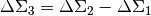
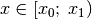
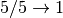
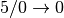
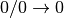
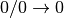

Processing results from xshear¶
Read xshear output from single file¶
-
proclens.xhandle.ioshear.read_single_bin(fname, metaname=None)[source]¶ Reads and interprets xshear output from a single file
infoanddataare passed on from xread, whilesheared_datais just a list ofdatatables corresponding to metacalibration sheared results.Parameters: - fname (str) – full path to output file
- metaname (str) – full base path to sheared output file
Returns: info,data,sheared_dataReturn type: np.ndarray, np.ndarray, list of np.ndarray
Read xshear output from multiple files¶
-
proclens.xhandle.ioshear.read_multiple_bin(fnames, metanames=None)[source]¶ Reads and interprets xshear output from many smaller files
infoanddataare passed on from xread, whilesheared_datais just a list ofdatatables corresponding to metacalibration sheared results.chunk_idsassigned to each row to indicate which chunk it originally came fromParameters: - fname (str) – full path to output file
- metaname (str) – full base path to sheared output file
Returns: info,data,sheared_data,chunk_idsReturn type: np.ndarray, np.ndarray, list of np.ndarray, np.array
Base xshear readers¶
-
proclens.xhandle.ioshear.xread(xdata, **kwargs)[source]¶ Reader for xshear output if style is set as both
Each row corresponds to the lensing profile of a single lens, average profiles require additional stacking
The output data is divided into two tables:
infocontains values relevant for the lens in general. It has a shape(N_lens, 3). the columns are:index: index from lens catalog weight_tot: sum of all weights for all source pairs in all radial bins totpairs: total pairs used
datacontains values for individual radial bins. It has a shape(12, N_lens, N_rbin), the columns are:npair_i: number of pairs in radial bin i rsum_i: sum of weights * sigma_crit_inv * r wsum_i: sum of weights * sigma_crit_inv ssum_i: sum of weights dsum_i: sum of weights * g_t osum_i: sum of weights * g_x dsensum_w_i: sum of weights * sigma_crit_inv * gsens_t osensum_w_i: sum of weights * sigma_crit_inv * gsens_x dsensum_s_i: sum of weights * gsens_t osensum_s_i: sum of weights * gsens_x mean_e1: sum of weights * g_1 mean_e2: sum of weights * g_2
In each case, _i means radial bin i
Parameters: xdata (np.array) – raw xshear output loaded to np array Returns: info,data, column description dictionaryReturn type: np.ndarray, np.ndarray, dict
-
proclens.xhandle.ioshear.xpatches(raw_chunks)[source]¶ Processes many smaller xshear output files via xread
Outputs a concatenated array of the many smaller files, along with a
chunk_idsassigned to each row to indicate which chunk it originally came fromParameters: raw_chunks (list) – list of raw xshear outputs loaded to np array Returns: info,data,chunk_idsReturn type: np.ndarray, np.ndarray, np.array
Logarithmic bin properties¶
-
proclens.xhandle.shearops.redges(rmin, rmax, nbin)[source]¶ Calculates nominal edges and centers for logarithmic radial bins(base10 logarithm)
Edges and areas are exact, “center” values are estimated as CIRCUMFERENCE weighted mean radius
Parameters: - rmin (float) – inner edge
- rmax (float) – outer edge
- nbin (int) – number of bins
Returns: centers, edges, areas
Return type: np.array, np.array, np.array
Jackknife label assignment¶
-
proclens.xhandle.shearops.assign_jk_labels(pos, centers, verbose=False)[source]¶ Assigns JackKnife labels to 2D points on the sky via spherical k-means
Parameters: - pos (np.ndarray) – positions of points in (RA, DEC)
- centers (int or np.ndarray) – Number of JK centers to use, or the (RA, DEC) coordinates of the centers
- verbose (bool) – verbose flag to pass to kmeans_radec
Returns: JK-labels, JK-centers
Return type: np.array, np.ndarray
Stacked Profile Container¶
-
class
proclens.xhandle.shearops.StackedProfileContainer(info, data, labels, ncen, lcname=None, metadata=None, metatags=None, **kwargs)[source]¶ Object Oriented interface for stacked shear and calculated via xshear
Features
- Jackknife based covariance estimation
- Calculate shear, DeltaSigma, and other averaged quantities
- Simple arithmetic with shear profiles:
+, -, *, / - Integration with Metacalibration style selection responses
Overview
The lensing profile is calculated in two stages:
- First, for each Jackknife-region defined by the
labels(that is for all-except-one region) the lensing profile is calculated, and stored inself.*_sub(These are the JK-subprofiles). - Using these JK-subprofiles, the mean lensing profile and the corresponding covariance is calculated via blockwise omitt-one Jackknife resampling.
In practice both of these steps are performed when calling self.prof_maker(), and the results are stored in the below varaiables. The default quantity calculated is the DeltaSigma:
self.rr: radial centers self.dst: E-mode lensing signal self.dst_err: error for E-mode lensing signal self.dst_cov: covariance for E-mode lensing signal self.dst: B-mode lensing signal self.dst_err: error for B-mode lensing signal self.dst_cov: covariance for B-mode lensing signal
A benefit of this two-step method, is that it allows for the quick calculation of errors on the differences, ratios and other transformations of shear profiles.
In particular, the self.composite function allows four basic operations
+, -, *, /between shear profiles, while the self.multiply function allows\*, /with integers or 1-D arrays (in which case each element is a value for a lens)E.g to calculate , we only need to compute the differences of JK-subprofiles and then re-compute the JK-mean, and JK-covariance.
In practice the above operation is achieved by:
# the operation is performed in-place, hence the deepcopy prof3 = copy.deepcopy(prof2) prof3.composite(prof1, operation="-")
Changing the physical quantity computed by self.prof_maker() is possibly by modifying the columns used by the stacking algorithm. The default values used for DeltaSigma are:
# default values for stacked DeltaSigma self.dst_nom = 4 self.dsx_nom = 5 self.dst_denom = 6 self.dsx_denom = 7 self.e1_nom = 10 self.e2_nom = 11 self.meta_denom = 3 self.meta_prefac = 2
To calculate shear one would need to change the above to:
self.dst_denom = 8 self.dsx_denom = 9 self.meta_denom = 3 self.meta_prefac = 3
Further information on the column positions are found in the xread documentation…
Parameters: - info (np.ndarray) –
infotable from xread - data (np.ndarray) –
datatable from xread - labels (np.array) – JK-region labels
- ncen (int) – number of JK regions in total
- lcname (str) – tag string
- metadata (list of np.ndarray) – sheared versions of
data - metatags (list of str) – sheared tags
-
prof_maker(weights=None)[source]¶ Calculates the Jackknife estimate of on stacked profile and on the corresponding covariance
Parameters: weights (np.array) – weight for each entry in the lens catalog
-
composite(other, operation='-', keep_rr=True)[source]¶ Calculate the JK estimate on the operation applied to the two profiles
Possible Operations:
- “-“: self - other
- “+”: self + other
- “*”: self * other
- “/”: self / other
The results is updated to self. Use deepcopy to obtain copies of the object for storing the previous state.
Parameters: - other (StackedProfileContainer) – an other profile…
- operation (str) – string specifying what to do…
-
multiply(val, keep_rr=True)[source]¶ Calculate the JK estimate on profile times the specified “val”,
Operation performed in-place. Use deepcopy to obtain copies of the object for storing the previous state.
Parameters: val (float or np.array) – value to multiply by
-
drop_data()[source]¶ resets the
info,dataandlabelscontainers toNoneThis reduces the size of the object in memory, but cannot re-stack the lenses anymore. Leaves the profile, JK-subprofiles and ancillary quantities unaffected
Jackknife Covariance estimate from multiple lensing profiles¶
-
proclens.xhandle.shearops.stacked_pcov(plist)[source]¶ Calculates the Covariance between a list of profiles
Only elements where both profile has at least 1 sources are considered, the rest is filled with placeholder values (-9999.0 by default).
Parameters: plist (list of StackedProfileContainer objects) – profiles across whiche the covarainces are to be calcualted Returns: cov (E-mode), cov (B-mode) Return type: np.array, np.array
Ancillary utilities¶
Observed to absolute magnitude conversion¶
-
class
proclens.tools.magtools.AbsMagConverter(cosmo='default')[source]¶ Apparent to Absolute magnitude conversion for red galaxies
Uses distance modulus + k-correction with single template
Examples
without saving lookup table:
# response function of the survey resp = { "survey": "DES", # name string for survey "lambda": lambda_array, # array of wavelength values "lambda unit": "nm" # this must be the same for the response and # the template "bands": bands # dictionary of band name, response array pairs # bands = {"r": r_arr, "g": g_arr} } # template spectra for the conversion templ = { "type": "red quiescent", "lambda": lambda_array, # array of wavelength values "lambda unit": "nm", # this must be the same for the response and # the template "sed": sed, # Values corresponding to the lambda values "sed unit": "Normalized Flux" # this is OK as long as the norm flag # is on when specifying the template } aconv = AbsMagConverter(cosmo=astropy.cosmology.FlatLambdaCDM(H0=70, Om0=0.3)) aconv.add_response(resp) aconv.add_template(templ, norm=True) # here mag is the set of apparent magnitudes, and z is the redshift # of each object. band is the string name of the band, like "r" absmag = aconv.convert(self, mag, z, band, z2=0.0, num=100, z_0='auto', z_1='auto', use_tables=False) # after the conversion is complete we can save the used lookup table # for later use with a pickle! aconv.save_tables("mytable.p")
Parameters: cosmo (astropy.cosmology.FlatLambdaCDM) – cosmology to use, default: H0=70, Om0=0.3
FITS to pandas conversion¶
-
proclens.tools.catalogs.to_pandas(recarr)[source]¶ Converts potentially nested record array (such as a FITS Table) into Pandas DataFrame
FITS tables sometimes have multidimensional columns, which are not supported for DataFrames Pandas DataFrames however provide many nice features, such as SQL speed database matchings.
The approach is to flatten out multidimensional column [[COL]] into [COL_1, COL_2, …, COL_N]
Examples
Just pass the loaded FITS table:
import fitsio as fio import proclens.io.catalogs as catalogs raw_data = fio.read("data.fits") data = catalogs.to_pandas(raw_data)
Parameters: recarr (numpy.array) – array to be converted to DataFrame Returns: array as DataFrame Return type: pandas.DataFrame
parameter selection¶
-
proclens.tools.selector.selector(pps, limits)[source]¶ Applies selection to array based on the passed parameter limits
Selection is defined like 
Examples
First make some mock data:
np.random.seed(seed = 5) nrows = 100000 ids = np.arange(nrows, dtype=int) ra = np.random.uniform(low=0., high=360., size=nrows) dec = np.random.uniform(low=-60., high=10., size=nrows) z = np.random.uniform(low=0.1, high=1.0, size=nrows) lamb = np.random.uniform(low=20, high=40, size=nrows) data = np.vstack((ra, dec, z, lamb)).T
then define binning edges:
ra_edges = (0., 100., 300.) dec_edges = (-60., -30., 10.) z_edges = (0.2, 0.4, 0.8) lamb_edges = (20., 30., 45., 60.) edges = (ra_edges, dec_edges, z_edges, lamb_edges)
This selection divides the data into 24 bins in 4-D space, which we can obtain perform as:
sinds, bounds, plpairs = sl.selector(data, edges)
Let’s inspect the output,
sindscontains the boolean indexing arrays to select rows by, whileboundsshows the corresponding parameter boundaries, for example:>>> bounds[13] ((0, (100.0, 300.0)), (1, (-60.0, -30.0)), (2, (0.2, 0.4)), (3, (30.0, 45.0)))
where the first number indicates the column of the data file it corresponds to, and the tuple contains the parameter boundaries for that column. Indeed we find:
>>> data[sinds[13], :].min(axis=0) array([ 100.03881951, -59.96803764, 0.20010631, 30.02361767]) >>> data[sinds[13], :].max(axis=0) array([ 299.68649402, -30.00117535, 0.39994843, 44.99060231])
which are the boundaries we were expecting
Parameters: - pps (np.array N-D) – numpy array with N rows, containing the parameters to split the sample by
- limits (list of lists) – list of parameter limits, each element contains limits for a columna of pps
Returns: list of boolean indices (one for each selection), list of param limits corresponding to each selection parameter limits expanded from sequence to list of tuples
Return type: list, list, list
list partitioning¶
-
proclens.tools.selector.partition(lst, n)[source]¶ Divides a list into N roughly equal chunks
Examples
Define some test list, and look at the obtained chunks with different
nvalues:>>> lst = np.arange(20) >>> lst array([ 0, 1, 2, 3, 4, 5, 6, 7, 8, 9, 10, 11, 12, 13, 14, 15, 16, 17, 18, 19]) >>> partition(lst, n=5) [array([0, 1, 2, 3]), array([4, 5, 6, 7]), array([ 8, 9, 10, 11]), array([12, 13, 14, 15]), array([16, 17, 18, 19])] >>> partition(lst, n=6) [array([0, 1, 2]), array([3, 4, 5, 6]), array([7, 8, 9]), array([10, 11, 12]), array([13, 14, 15, 16]), array([17, 18, 19])]
As we can see, even when
nis not a divisor oflen(lst), it returns roughly balanced chunksParameters: - lst (list) – list to split up
- n (int) – chunks to make
Returns: list of chunks
Return type: list of lists
safe divide¶
-
proclens.tools.selector.safedivide(x, y, eps=1e-08)[source]¶ Calculates x / y for arrays, setting result to zero if x ~ 0 OR y ~ 0
Defined such that
but
 and and 
and Parameters: - x (np.array)
- y (np.array)
- eps (float) – threshold for setting element to zero
Returns: x / y where (xabs > eps) and (yabs > eps), 0 elsewhere
Return type: np.array
Visualization¶
corner plot¶
-
proclens.tools.visual.corner(par_names, pars, par_edges, figsize=(8, 8), color='black', fig=None, axarr=None, mode='hist', cmap='gray_r', normed=True, fontsize=12, tick_list=None, clevels=(0.68, 0.95), grid=True, weights=None, **kwargs)[source]¶ Creates NICE corner plot (check if pars have the righ orientation, perhaps use pars.T)
Example
Simple 2D gaussian with marginals and joint distribution:
import numpy as np import proclens as proclens # generate mock data means = [0, 0] cov = [[1., 0.4], [0.4, 1.]] pars = np.random.multivariate_normal(means, cov, size=int(1e4)).T # define names and edges par_names = ["$x$", "$y$"] par_edges = (np.linspace(-5, 5, 100), np.linspace(-5, 5, 100)) fig, axarr = proclens.tools.visual.corner(par_names, pars, par_edges)
Parameters: - par_names (list of strings) – names of parameters as they should appear on figure
- pars (np.ndarray) – the DATA to show, (might have to transpose it!
- par_edges (list of tuples) – parameter limits
- figsize (tuple) – size of matplotlib figure
- color (str) – primary color to use
- fig (mpl.figure) – figure
- axarr (list of mpl.axes) – axarr
- mode (str) – hist or contour
- cmap (str) – matplotlib color map to use for histogram
- normed (bool) – normalize histograms across subplots
- fontsize (int) – fontsize
- tick_list (list of np.arrays) – list of tick positions for each axis
- clevels (list) – contour levels as contained probability
- weights (weights for each entry in pars)
Returns: fig, axarr
Return type: plt.figure, (plt.axis, .., plt.axis)